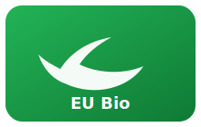
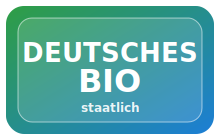
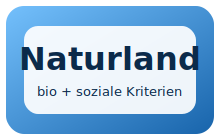
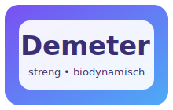

Biosiegel – was steckt dahinter?
Kurz, verständlich und vergleichbar: EU‑Bio, deutsches Bio, Bioland, Naturland und Demeter.
Timeline
Vom Basis‑Standard (EU) bis zu besonders strengen Verbandsstandards.
EU

EU‑Bio‑Logo
Basis‑Standard
- Pflichtkennzeichen für vorverpackte Bio‑Lebensmittel in der EU.
- Mind. 95% der Zutaten aus ökologischem Landbau.
- EU‑Öko‑Verordnung: Kontrollsystem & klare Regeln.
✅ Solider Mindeststandard
DE

Deutsches Bio‑Siegel
Gleiche Rechtslage wie EU‑Bio
- Freiwilliges deutsches Markenzeichen (setzt EU‑Bio voraus).
- Inhaltlich identisch zu den EU‑Bio‑Regeln (nicht automatisch strenger).
- Registrierung/Zertifizierung notwendig.
✅ Gut zur Orientierung, aber nicht strenger als EU
NL

Naturland
Zusatz‑Kriterien (öko & sozial)
- Internationaler Verband – zusätzliche ökologische & soziale Kriterien.
- Fairness/Handel und Nachhaltigkeit spielen eine größere Rolle.
- Oft strengere Anforderungen als EU‑Bio.
🌟 Tendenziell strenger als EU‑Bio
BL

Bioland
Strenger als EU‑Bio
- Größter deutscher Bio‑Anbauverband.
- Vorgaben gehen über EU‑Standards hinaus (z. B. Tierwohl/Umweltauflagen).
- Mehr Kontrolle und strengere Verbandsregeln.
🌟 Streng – oft „besser“ als nur EU‑Bio
DM

Demeter
Sehr streng
- Ältestes Bio‑Siegel (seit den 1920ern), biodynamischer Ansatz.
- Sehr strenge Regeln (Bodenpflege, Tierhaltung, Kreislaufprinzip).
- Gilt häufig als einer der strengsten Standards.
🏆 Sehr streng – oft „Best‑in‑Class“
Merksatz
EU‑Bio & deutsches Bio = Mindeststandard. Verbände wie Bioland, Naturland und Demeter sind meistens strenger – Demeter oft am strengsten.
Quellen (für eure Doku):
- WWF: „Was bedeutet welches Siegel?“
- Umweltbundesamt: Organic farming / eco‑friendly farming
- Bingenheimer Saatgut: Infos/Material zu Demeter, Bioland, Naturland